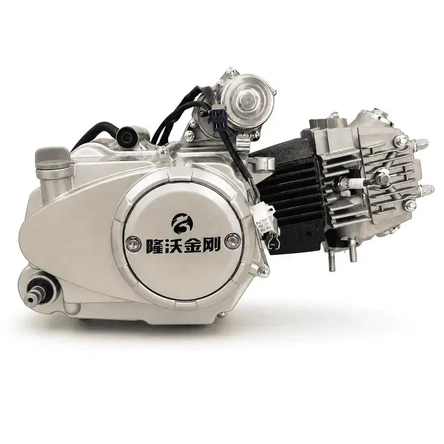

CG125 – CG250 & Eau
Moteurs CG à tiges de culbuteurs & Tricycles à eau
CG125, CG150, CG200 (10 kW / 13,5 N·m), CG250, CG150SB–CG250SB et série lourde HW200–HW350 (dont HW300 275,3 mL) avec option marche arrière.
Toutes nos familles de moteurs complets et pièces détachées sont préparées à Chongqing avec commande mixte dès 50 unités FOB Guangzhou et test au banc chaud/froid à 100 %.
CG125, CG150, CG200 (10 kW / 13,5 N·m), CG250, CG150SB–CG250SB et série lourde HW200–HW350 (dont HW300 275,3 mL) avec option marche arrière.

Distribution par chaîne silencieuse, arbres d'équilibrage et prise de régime fluide pour motos routières et tout-terrain.

Pour motos de type Cub et applications Jakarta compatibles : 106,7 ml, 107 ml, 123,67 ml (série 130), 140 ml et 149,8 ml.

Refroidissement liquide (eau), 75 × 65 mm, variateur CVT L-H-N-R avec marche arrière intégrée et embrayage centrifuge 5 mâchoires.

Moteurs complets et pièces de rechange adaptables (demi-carters, culasse complète, kit cylindre-piston, vilebrequin, pochettes de joints) aux cotes OEM.

Sous-ensembles d'origine CHIXIANG pour révision complète de moteurs refroidis par eau, carters ADC12 et pignons de transmission.

12,5 kW · 21 N·m · Carter 1,5 L · Roue libre 20 rouleaux · 5F + marche arrière externe.

11,5 kW · 19,5 N·m · Plateforme CG refroidissement liquide pour tricycle standard.

10 kW @ 7 500 tr/min · 13,5 N·m @ 6 500 tr/min · Moto utilitaire et cargo léger.
Tiges de culbuteurs éprouvées, maintenance atelier facile et haute rotation de pièces.
Moteur complet adaptable + carters 36PF0004/36PF0005 et kit réfection atelier.

Refroidissement par air forcé, marche arrière 4F+1R et pièces de carter associées.
Combinez moteurs complets CG, CB, horizontaux Cub/Jakarta, HW300 à eau et moteurs/pièces adaptables Bajaj & TVS sous terme FOB Guangzhou.